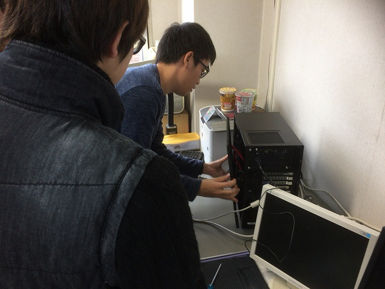

| ・ PCリサイクル (H30.11.07) | |||
流体ソルバーで遊びたくなったとのことで，研究室に自生するPC部品を集めてPCを作ってみました．作る人はB4のY山くんとM山くん，アドバイザーに春に計算サーバー作ったB4のM四くんです．定期的に使えそうな部品を外して古いPCを廃棄して何年か経つと，PC1台作れるくらいの部品が集まります（各部屋にある部品が生えてるとか，自生しているとかいうのだそうです）．使用例：電源が壊れたなら，生えているのと交換してすぐ計算まわそうぜ． |
|||
|
まず転がっているPCをニコイチ |
メモリを移動で8GBが16GBに | ||
|
設置場所を整えて |
生えていた液晶（なんか調子悪い | ||
|
助教の部屋に生えてた電源ケーブル |
生えるもんなんですか？ | ||
|
考えるな，感じろ |
BIOSまでOK，メモリも増設を認識 | ||
|
自生していたグラボ（いろんなPCを移動してきた |
マザボとケースの隙間を狙って | ||
|
グラボ認識（私はたぶん3台目だと思うから |
ネジ止め | ||
|
HDDのSATAと電源ケーブル装着 |

蓋をして | ||
|
自生していたキーボード，マウスを付けて |
OSは | ||
|
もちろんLinux |
どうでしょか？ | ||
|
インストール画面へ |
これで遊べます | ||